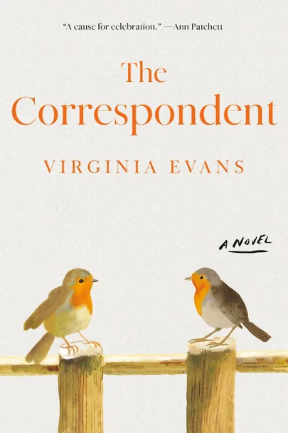

The Correspondent by Virginia Evans Review: The Year’s Quietest Bestseller Earns Its Place
I bought The Correspondent by Virginia Evans on a Wednesday night in Edinburgh after seeing it on the New York Times fiction list for the third week running and thinking, what is this? A debut. An epistolary novel. A retired American lawyer in her seventies writing letters from Maryland. Not the sort of book that usually goes to the top of the chart in 2026. Charts in 2026 are for thrillers and dragons and the latest Freida McFadden.

I read it in three sittings.
This is a quiet book. Quiet in the way Marilynne Robinson’s Gilead is quiet, in the way Anne Tyler’s best novels are quiet. It moves at the speed of a person sitting at a desk with a fountain pen and a fresh sheet of writing paper, deciding what to say to the brother in France, the best friend nursing a husband through illness, the daughter she has been failing for thirty years, the author whose new book she has thoughts about. Every chapter is a letter. The whole novel is built out of correspondence. Sometimes there is an email. Mostly there is not.
It is also, despite the form, one of the most quietly devastating novels I have read in a long while. It also happens to have just been longlisted for the 2026 Women’s Prize for Fiction. The cross-pollination between commercial bestseller and prize contender is rare. It deserves the attention.
This is the long-form review.
The premise
Sybil Van Antwerp is seventy-three. She lives alone in a house in Maryland. She is divorced from a man she should not have married. She has two living adult children, one in London, and a third child, Gilbert, who died at the age of eight. She was adopted as a baby and never met her biological mother. She retired some years ago from a long career as chief clerk to a federal judge, the kind of position that requires a sharp legal mind and a temperament that does not flinch at human cruelty.
Most mornings, around half past ten, she sits down to write letters. She writes to her brother, who lives in France. To her best friend Rosalie, who is also her former sister-in-law, which is a knot the novel takes its time unpicking. To her two living children. To the president of the local university, who will not let her audit a class on Greek tragedy that she desperately wants to take. To Joan Didion, about grief. To Larry McMurtry, about her third reading of Lonesome Dove. To Diana Gabaldon, with a polite complaint about the amount of sex in the Outlander books. To Kazuo Ishiguro. To Ann Patchett, who in real life blurbed the novel, which is a small joke buried inside the larger one.
She also writes letters that she never sends. To one person in particular. The novel keeps the identity of that person hidden until very late, and you will not get any spoilers from me here.
This is the surface architecture of the book. What lies underneath is a portrait of a woman who has spent her entire adult life using the page to manage what she cannot manage face to face. She is a lawyer. She knows the value of a paper trail. She also knows the cost.
Why this book is on the bestseller list
Epistolary novels are not supposed to work in 2026. The form is associated with the eighteenth century, with Samuel Richardson’s Pamela and Choderlos de Laclos’s Les Liaisons dangereuses, with a time when letter-writing was the only means of maintaining a long-distance relationship. By the time you reach the twentieth century the form had largely fallen away. Alice Walker brought it back briefly in The Color Purple. Mark Dunn did clever things with it in Ella Minnow Pea. But for the most part, the epistolary novel has been a curiosity. A formal experiment. Not a bestseller format.
Ann Patchett, who appears in the novel itself, said on a PBS interview that she initially doubted the book would last because epistolary novels usually do not work. Her doubt was reasonable. Her doubt turned out to be wrong.
What Evans has done is figure out that the form, in the right hands, does the one thing modern literary fiction often struggles to do well. It builds a person on the page so completely that you feel you have lived inside their head. The reason is structural. When a novel uses third-person narration or even first-person narration, the reader is always at one remove from the character, hearing about their thoughts. When a novel is built entirely out of letters, the reader is reading what the character actually wrote. There is no narrator standing between you and them. You are looking directly at their handwriting.
Sybil Van Antwerp emerges through this directness as one of the most fully realised characters in recent American fiction. She is sharp, she is funny, she is stubborn to the point of self-harm, she is generous with her time in ways that surprise her, she is cruel in ways she does not always notice. She is also lonely in a way she cannot name. She is exactly the kind of person you might dismiss as cantankerous if you met her at a garden club meeting and exactly the kind of person you would want in your corner if you ever found yourself in serious trouble.
The book has reached the top of the New York Times list because Sybil is a character readers want to spend time with. The form serves the character. The character carries the book.
What the writing actually does
Evans is a debut novelist. She spent twenty years writing books that did not get published. The Correspondent is the breakthrough that came when she had stopped expecting one. You can feel the twenty years of work in the prose. Every letter has a different register depending on who Sybil is writing to. Her notes to her brother in France are warm and slightly playful. Her letters to Rosalie are intimate, the language of a friendship that has lasted half a century and survived the structural complication of the two women being briefly married into the same family. Her letters to her daughter are formal and a little stiff, holding her at a careful distance even as the words on the page beg for closeness. Her emails to a customer service representative at a phone company are brutally efficient and contain the kind of polite venom that only an older woman with a lifetime of being underestimated can produce.
This level of voice-shifting is hard. Anyone who has tried to write fiction knows it is hard. Most novelists settle for one voice and stay inside it. Evans gives Sybil a different voice for every recipient and somehow keeps them all recognisably Sybil. The technical achievement is genuinely impressive.
The book also contains some of the best lines about reading I have come across in a contemporary novel. Sybil writing to Diana Gabaldon about Outlander, describing how she read the book all day, skipped garden club, read into the night, woke in the morning, finished the doorstop of a thing, and stepped onto her back porch like an opossum blinking blearily at the morning. That sentence captures the experience of being captured by a long novel in a way I have not seen described better since John McPhee tried it. It is also funny, which most descriptions of reading are not. If you are a writer, the book offers a small masterclass in the use of the iceberg theory applied to character revelation. Every letter Sybil writes contains seven-eighths of what she is actually thinking just below the surface. The reader knows. Sybil knows the reader knows. The recipient of the letter, of course, has no idea.
What might frustrate some readers
I want to be honest about this because the book has its limits and pretending it does not would do you a disservice.
The first 50 pages are slow. The voice takes time to settle. The reader has to learn to track multiple correspondents across multiple decades, and the early pages can feel like being handed a stack of unfamiliar mail and asked to make sense of it. If you abandon the book in the first hour, you will feel justified. If you push through to about page 80, the novel takes hold and does not let go.
The central tragedy, the death of the eight-year-old son Gilbert, is handled with restraint that some readers will find too restrained. Evans never plunges into the grief directly. She lets it surface in fragments. This is a deliberate choice and I think it is the right one, but a reader expecting catharsis in the conventional sense will not get it here. The grief in The Correspondent is the grief of someone who has lived with a loss for thirty years and learned to fold it into the shape of every day. It does not crescendo. It accumulates.
The plot, such as there is, is gentle. Things happen but slowly. A threatening letter from the past. A delayed romance. A reckoning with a daughter. If you need a propulsive narrative, this is not your book. If you can accept that the plot is the woman, you will be fine.
Where it sits in the wider conversation
The Correspondent arrives at an interesting moment for women’s fiction. The 2026 longlist is one of the strongest in years and Evans is one of the seven debut novelists on it. Whether she makes the shortlist on 22 April is a separate question, and I have made my own shortlist predictions elsewhere on the site, but the longlisting alone confirms that the book is being read as serious literature, not just as a commercial hit.
It also sits inside a quiet revival of the patient, character-driven novel about an older woman finding her way. Maggie O’Farrell did it differently in Hamnet. Elizabeth Strout has been doing it for decades. Anne Tyler is still doing it. Claire Keegan does it in shorter forms. The Correspondent belongs in that conversation, and the conversation is more interesting than the algorithmic noise of most current bestseller lists.
If you read and loved Olive Kitteridge, this is your next book. If you read and loved Hamnet, this is your next book. If you read and loved Lessons in Chemistry but wanted something with more weight under the warmth, this is your next book.
My verdict
The Correspondent by Virginia Evans is the year’s quietest bestseller and one of the most fully realised character studies I have read in a long while. It earns every one of its readers. The form serves the character. The character carries the book. The twenty years of unpublished work behind it are visible in every paragraph.
Read it slowly. Let it accumulate. Trust the form.
Buy The Correspondent by Virginia Evans on Bookshop.org UK. Your purchase supports independent bookshops and contributes a small commission to Tumbleweed Words at no extra cost to you.
If you want more on what literary fiction is doing right now, my piece on literary fiction in 2026 covers the wider landscape this book sits inside.
If this was useful, buy me a coffee.
Flash fiction and prose poetry in the tradition of what you just read. Written on the road. Over 1,200 readers. Free.
Read and subscribe →